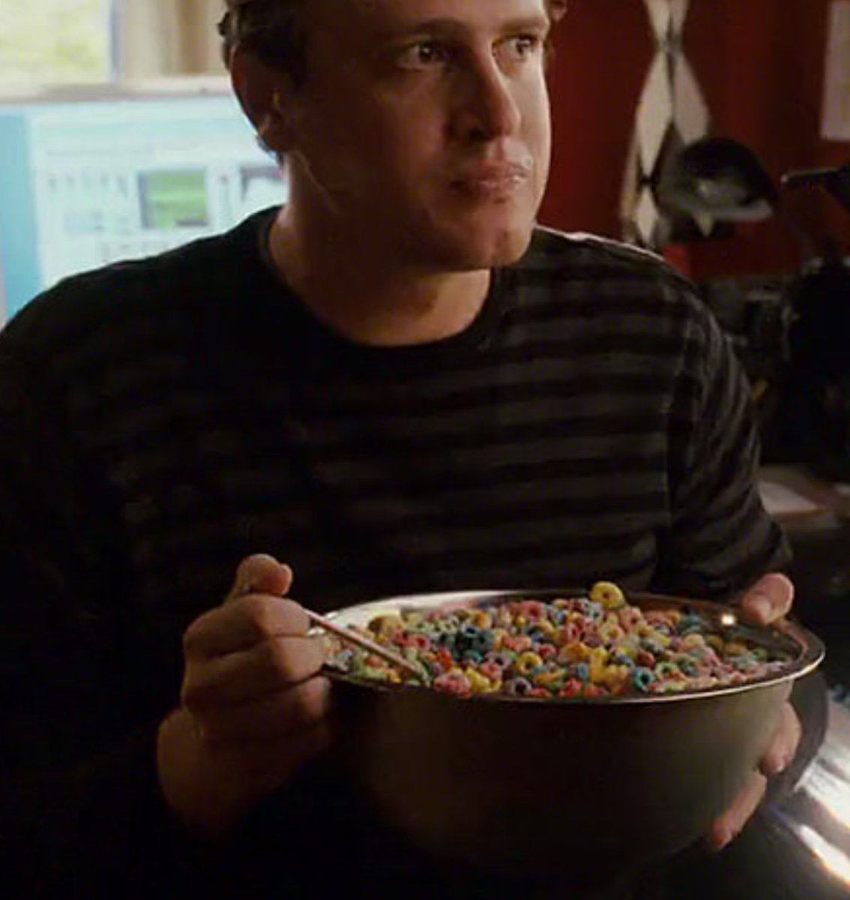

Alex's Big Bowl of Cereal Recipe!

Description:
Don't you just love eating a big bowl of cereal? I know I sure do. But the one thing that keeps most people from eating a big bowl of cereal is all the hassle of making the bowl.
Well, fear not! I'm here to show you my simple 'hack' for making a big ass bowl of cereal.
Ingredients
- a bowl
- box of cereal (your choice)
- Milk (your choice, I prefer cow's)
- spoon (optional, you can also just pour it directly in your mouth)
Steps
- Wake up at the crack of noon.
- Contemplate the decisions in your life that's led to this point
- Go to the kitchen and grab the bowl
- Fill the bowl with cereal of choice
- Pour milk over the cereal, be careful not to over fill the bowl with milk
- Eat the bowl of milk
- Optional: clean up after yourself afterwards